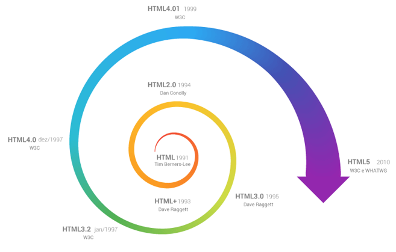

HTML (Hyper Text Markup Language) é uma Linguagem de Marcação de Hipertexto utilizada para criação de páginas da Web. Essa é a linguagem que o seu navegador (Browser) decodifica para exibir as páginas. (FERREIRA & EIS, ONLINE, p.7)
Hipertexto pode ser definido como todo o conteúdo o qual se encontra inserido em um documento para a web, sendo que sua principal característica seria a possibilidade de se interligar a outros documentos também na web. (SILVA, 2011, p.20)
O HTML é baseado no conceito de Hipertexto. Hipertexto são conjuntos de elementos – ou nós – ligados por conexões. Estes elementos podem ser palavras, imagens, vídeos, áudio, documentos etc.
Com a linguagem HTML é possível desenvolver toda a estruturação do conteúdo da mesma (título, subtítulo, posicionamento de imagens, tabelas, etc). (W3CSCHOOL, ONLINE)
As páginas criadas em html são visualizadas pelos navegadores.
Desde a invenção da web em 1992 por Tim Berners-Lee, a HTML evoluiu a cada versão lançada, sendo a versão mais atual a HTML5. (SILVA, 2011, p.21)
- CSS (Cascading Style Sheets — Folhas de Estilos em Cascata) é uma extensão da HTML, uma linguagem de estilo, ou seja, fazendo o uso dessa linguagem é possível definir como o conteúdo dos elementos HTML serão apresentados na página da Web. Essa extensão foi incorporada à linguagem HTML a partir de sua quarta versão em 1997.
- O CSS3 é a segunda versão da linguagem CSS.
- Separar o conteúdo do documento HTML de sua formatação. Forma antiga de se formatar conteúdos: Exemplo: font size=“12” color=“blue”>TEXTO AZUL TAMANHO 12 Ou seja, se você tivesse 10 tipos diferentes de fontes em uma mesma página, então teria de fazer esta formatação 10 vezes. Até que fazer isto em uma só página, tudo bem, mas se o site tivesse 100 páginas então seria muito trabalhoso manter e alterar estas fontes, não acha?
- Controle do layout de diversos documentos utilizando apenas uma folha de estilos.
- Maior precisão no controle do layout e design
- Aplicação de diferentes layouts para adaptação do conteúdo e design em diferentes formas de apresentação (impressoras, telas de diferentes tamanhos, etc.)(W3CSCHOOL, ONLINE).